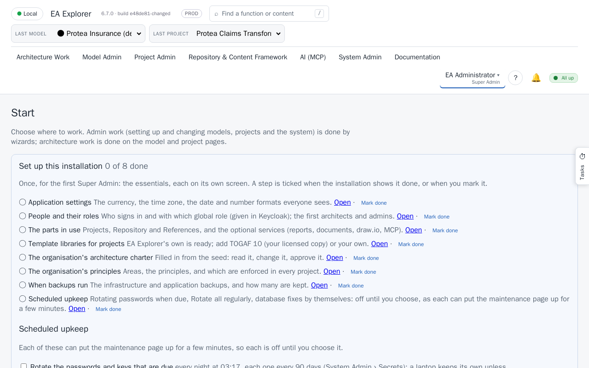

Sign in with break glass
For: System Admin
When sign-in itself is down: the break-glass password.

#/break-glassWhy do this
If Keycloak itself fails, nobody can sign in the usual way. The break-glass password, kept safe outside EA Explorer, gets an administrator in to fix it; every use is logged.
Security in EA Explorer is a set of layers: who can reach it, how they prove who they are, what their roles allow, and secrets no one can read. Each layer is set on the screens, and nothing here ever shows a secret's value.
In TOGAF terms: Outside the method: this protects the repository and who reaches it. See EA Explorer and the TOGAF Standard.
The goal: You can get in when normal sign-in is down.
Before you start You need the break-glass password.
Steps
- Open
https://<your EA Explorer address>/#/break-glass. - Give the break-glass password, kept safe outside EA Explorer.
- Fix sign-in; every break-glass sign-in is logged.